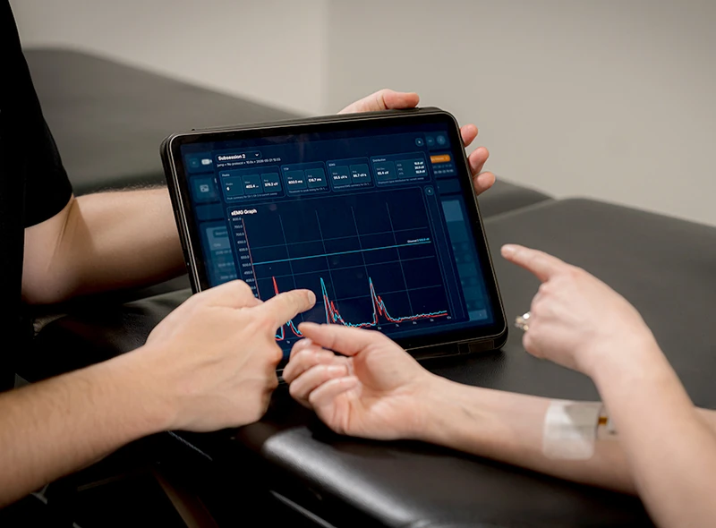

Winning a 12-clinic group's first clinic takes about 13 weeks and, on average, about $6,900 of marketing.
Here is how an example group, a made-up physical therapy (PT) company that owns 12 clinics, would move through the plan, and what each step costs at the plan's planning numbers. The rest of the page explains the system behind it.
We plan on one clinic paying Control Bionics about $7,500 in its first year, about $625 a month, so the $6,900 is covered by about 11 months of that clinic's payments, before product, sales and pilot kit costs.1
-
Week 2
The group is on our list.
We buy a list from a database of healthcare providers, which finds clinics by their . We group the 12 clinics under one owner by matching their practice addresses. The list names the leaders it holds, such as the owner and the rehabilitation (rehab) director who leads the group's therapy work. Which job titles each list covers is checked in week one.
Cost: about $11, this group's share of the $10,800 data budget. List and Bombora prices are quotes in week one.
-
Week 3
People there start researching.
Bombora, an company, shows that staff at the group are reading more than usual about rehab equipment and billing software. Bombora reports by company and does not name people. That marks the group as , so it moves to the front of the line for ads and email.
Cost: already counted in the $11 above
-
Week 4
Its leaders start to see our ads.
The list is split at random into two halves. This group lands in the half that sees , bought through Propensity, an account-based ad platform. The other half, the , gets the same emails without ads, so we can measure what the ads add. The owner sees a five-card carousel ad on LinkedIn. The clinic directors see the 15-second video, and banner ads on websites in Propensity's network.
Cost: about $45 over 90 days, about $27 of ads plus this group's share of Propensity's fee
-
Week 5
The rehab director and the owner each get an email.
The rehab director receives the first of four short, plain emails, and the owner receives the first owner email. Had the owner not replied by week 8, a box would follow with a sample strip and a one-page estimate built on labeled planning figures the group can replace with its own.
Cost: about $5 of email. The box price is a quote in week one.
-
Week 6
The rehab director books a call.
The rehab director replies and books a time on the calendar of Tanner, the inside-sales rep who takes these calls. The lead passes our five checks, so the call counts as one , the number this whole plan is built to grow.
Cost: about $860 of marketing per qualified call the budget pays for in month three, just under the $930 a call can cost and still be covered by first-year payments
-
Week 7
They agree to a 30-day pilot.
On the call, the rehab director, the owner and one clinic director agree to a , a 30-day trial at one clinic. Before it starts, they write their own success measures, such as minutes added to a visit and how often therapists use it.
Force plates
7% gap
Muscle activation
37% gap
Illustration of the software screen for one athlete's example. Force plates, which measure how hard each leg pushes, showed a 7% gap between legs. NeuroStrip showed a 37% gap in how hard the hamstring on each side was working.2 Cost: sales time, outside this budget
-
Weeks 8 to 12
One clinic runs the pilot.
The clinic director uses NeuroStrip with real patients for 30 days. The rehab director checks the results against the measures they wrote.

Product photography: Control Bionics. Cost: one kit on loan from the set Control Bionics keeps for pilots, plus setup time, both outside this budget. Pilot terms: confirm in week one.
-
Week 13
The owner signs for the first clinic.
The pilot met its measures, so the owner signs. That clinic is planned to pay Control Bionics about $7,500 in its first year, more than the $6,900 it took, on average, to win.3
Value: about $7,500 in the first year
-
Months 4 to 12
The group rolls it out to more clinics.
The group's chief operating officer (COO) plans the next clinics on the same contract. If each extra clinic were priced like the first, all 12 would bring in about $90,000 a year with no new marketing spend. The price per extra clinic is confirmed in week one.
Value: up to about $90,000 a year across 12 clinics
Learn more about the math
Where the $6,900 comes from
At the base budget, month three spends about $33,300. The plan expects about 15 qualified calls a week at Day 90, but about 4 of those already come in today and about 2 come from the February conference, which has its own budget. The spend pays for about 9 a week, or about 39 a month, so each costs about $860. Of qualified calls, 55% become real sales opportunities, 45% of those start a pilot, and half of pilots sign. So about 12.4% of calls become customers, and $860 divided by 0.124 is about $6,900 per new customer.
Counting every call, including the ones this budget does not pay for, the same month costs about $510 a call and $4,100 a customer. We use the higher figures, because new money only buys the calls it pays for.
This group's own share is about $61 plus the box. The $6,900 also pays for the groups that never buy: about 8 qualified calls lead to each customer.
How the per-group costs are worked out
- List and data: the $10,800 data line spread over about 1,000 target groups is about $11 a group. It also pays for scheduling tools and Salesforce work.
- Ads: the $22,500 account-based line spread over the roughly 500 groups in the half that sees ads is about $45 a group, about $27 of ads plus this group's share of Propensity's $9,000 fee.
- Email: the $5,400 email line spread over all 1,000 groups is about $5 a group.
- The direct mail box has no published price. It is quoted in week one and capped inside the small-tests line.
What would change this story
Three numbers matter most: how many qualified calls become customers, the real first-year value, and the real price per extra clinic. All three come from Control Bionics' last 12 months of trials, which we enter in Salesforce in month one. By Day 30 these planning figures are replaced with real ones.
- $6,900 is the base budget's month-three cost per qualified call it pays for (about $860) divided by the share of calls planned to become customers (12.4%). Eleven months is $6,900 divided by $7,500 a year, or $625 a month. Payback here means first-year payments, before product, sales and pilot kit costs. Control Bionics' margin, asked for in week one, turns it into true payback.
- The 7% and 37% figures are one athlete's example from Control Bionics: three weeks after a hamstring injury, force plates showed a 7% gap between legs and NeuroStrip showed a 37% gap in muscle activation. NeuroStrip is a non-diagnostic measurement and biofeedback tool.
- $7,500 is a planning figure for first-year value, replaced by real contract values from the trial history in month one. Price per extra clinic is confirmed in week one.